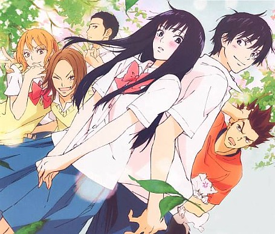
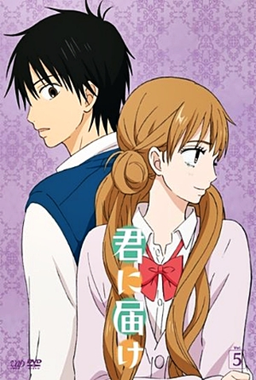
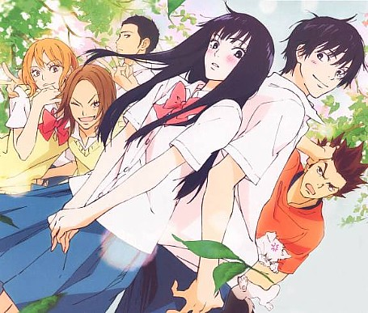
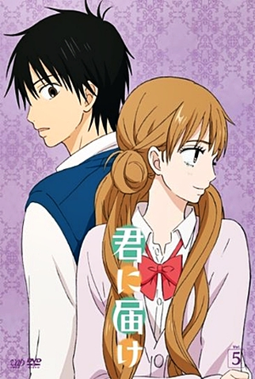
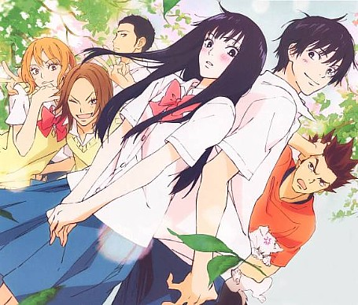
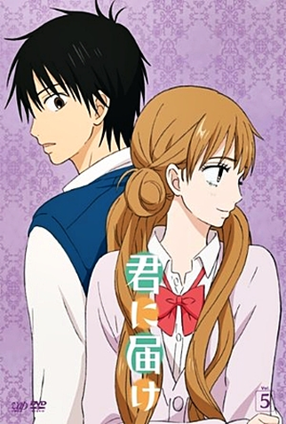

Galeria
 



Kimi ni Todoke conta a história de Sawako Kuronuma, uma estudante do ensino médio que é muitas vezes mal interpretada por causa de sua semelhança com a personagem de filme de terror Sadako. No entanto, ela é uma garota tímida e gentil, que só quer fazer amigos e viver uma vida normal. A história se desenvolve conforme ela faz novos amigos e se aproxima de seu colega de classe, Kazehaya.
Uma garota doce e tímida que deseja se conectar com as pessoas ao seu redor.
Um garoto popular e amigável, que se torna o primeiro amigo de Sawako.
Amiga leal de Sawako, conhecida por sua personalidade forte.
Amiga alegre e extrovertida de Sawako.


Entre em contato conosco para saber mais sobre Kimi ni Todoke.